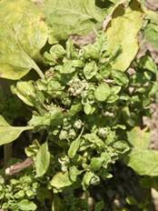

BRINJAL :: MAJOR PESTS :: BROWN LEAFHOPPER
5. Brown leafhopper: Cestius phycitis (Cicadellidae, Hemiptera)
It is a vector of little leaf of brinjal. Nymphs and adults suck cell sap from ventral side of leaf and inject toxins into the plant tissues and cause reduction in size of leaves, shortened petioles, excessive growth of branches general stunting of plants, conversion of floral parts into leafy structures and give the plants a bushy appearance. Fruiting is rare. The adults are small light brown leafhoppers having bright yellow marks on its thorax.
|  |
|---|
Management
- Rogue out infested plants as soon as they appear in the field and completely destroy them.
- Before transplantation dip the seedlings in 0.2% carbosulfan 25 DS solution to control the insect vectors.
- Spray 3-4 times at 10 days interval with methyl parathion 750 ml or dimethoate 500 ml or monocrotophos 500 ml or endosulfan 1.0 L or imidacloprid 125 ml in 500 -750 L of water /ha